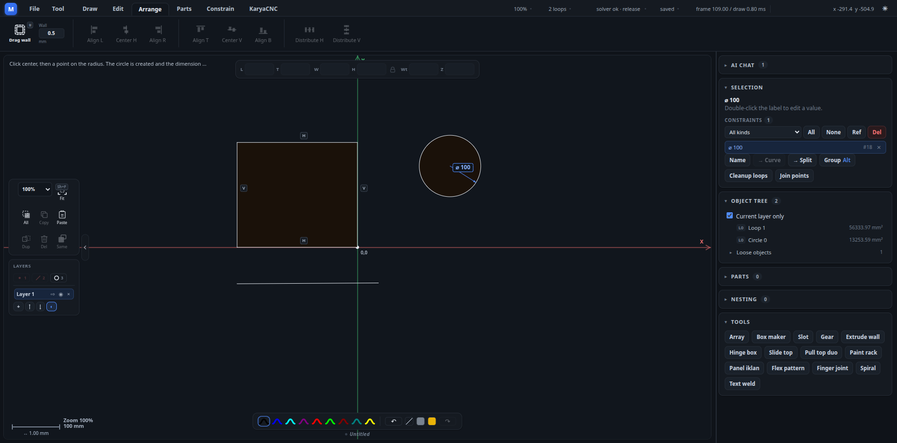
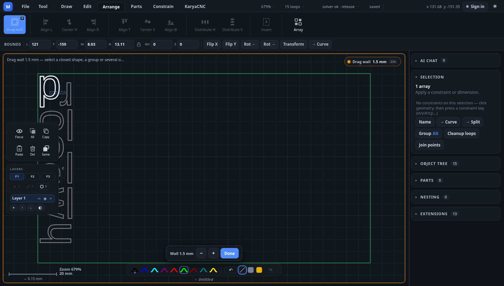

Tab Arrange — Susun Objek
Digunakan untuk mengatur posisi dan relasi antar objek di kanvas: rata tepi, tengah, distribusi jarak sama, dan drag wall untuk nesting manual.

1. Align (Rata tepi)
| Tombol | Keterangan |
|---|---|
| Align L | Rata tepi kiri dari objek terpilih. |
| Center H | Tengah secara horizontal (rata titik tengah vertikal). |
| Align R | Rata tepi kanan dari objek terpilih. |
| Align T | Rata tepi atas dari objek terpilih. |
| Center V | Tengah secara vertikal (rata titik tengah horizontal). |
| Align B | Rata tepi bawah dari objek terpilih. |
2. Distribute (Distribusi)
| Tombol | Keterangan |
|---|---|
| Distribute H | Distribusikan secara horizontal dengan jarak sama antar objek. |
| Distribute V | Distribusikan secara vertikal dengan jarak sama antar objek. |
3. Drag wall (W)
Drag wall adalah pengaman nesting manual — sangat cocok dipakai setelah Nesting otomatis untuk merapatkan atau memindahkan part di dalam lembar hijau tanpa risiko bertabrakan. Pilih bentuk tertutup, clone hasil nesting, group, atau beberapa objek, atur tebal wall (default 1 mm), lalu geser di kanvas.
- Seluruh pilihan dianggap satu objek compound. App mengambil kontur terluar dan membungkusnya dengan amplop offset hidup (collision wall).
- Amplop hanya digambar saat drag dan tidak pernah ditambahkan ke gambar, dipotong, atau diekspor.
- Saat pointer bergerak, wall diuji terhadap objek lain (termasuk huruf/part tetangga dan batas lembar hijau). Jika akan melewati penghalang, pilihan menahan posisi bebas collision terakhir (wall berubah merah dengan badge BLOCKED dan pratinjau hantu di posisi kursor). Saat posisi bersih ditemukan, wall kembali hijau (CLEAR) dan objek mengikuti lagi.
- Loop terluar dipakai sebagai poligon (loop dalam/lubang diabaikan). Garis/busur terbuka dipakai apa adanya. Group memakai bounding box-nya.
- Part yang berada penuh di dalam outline lembar tetap sah — berguna untuk menata part di dalam lembar.
- Gunakan mode Release/Manual solve untuk nesting yang tepat, karena drag dengan live-solve dapat merusak cached wall.

hello world secara manual dengan Drag wall (1.5 mm): huruf o berhenti aman di posisi bebas benturan terakhir (BLOCKED di kanan atas) lengkap dengan amplop merah putus-putus dan bayangan posisi kursor.Tebal wall diatur lewat bar wall melayang yang muncul saat alat Drag wall aktif (tombol −/+) atau Settings → Geometry → Drag wall thickness (bawaan 1 mm). 0 = outline itu sendiri; 1 mm menjaga jarak 1 mm ke setiap objek lain.
4. Insert ke Kotak Hijau
Tombol Insert memindahkan semua objek non-hijau yang sedang dipilih secara bersama-sama (sebagai satu kesatuan) ke tengah kotak pandu Hijau (Mark):
- Posisi relatif antar objek di dalam pilihan tetap terjaga (lubang atau teks di dalam desain tidak bertumpuk di tengah).
- Jika ukuran grup lebih pas bila diputar 90°, MiniSketch otomatis memutarnya 90° agar muat di dalam kotak hijau.
- Berguna untuk memposisikan batch desain atau hasil gambar cepat ke lembar kerja/bahan berwarna hijau.